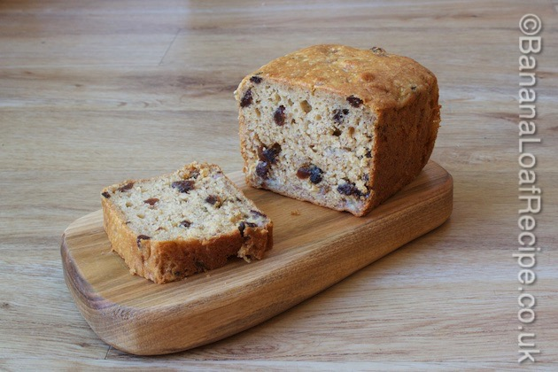

The home of easy and delicious banana loaf recipes and a wealth of articles to answer all your banana loaf baking needs.
When my best friend was diagnosed with Coeliac Disease, the gluten-free world went from being something on the peripherals of my foodie world to being something in which I actively took an interest. I suddenly understood how gluten is everywhere and how being gluten-free really does change your life.
Having Coeliac Disease doesn't just mean you're intolerant to wheat. It means your body can't take a single grain of it. You can't just have a bit of bread on a "naughty day". You pay too high a price. You can't even have a sandwich made on a bread board that has had "normal" bread on it. In a family environment, you have to find a way to allow your partner and children to eat wheat without you ingesting it. All of that takes time, education and patience.
Talking to my best friend, I am full of admiration for the way she has handled the changes in her life. She is determined to get better and her positive attitude is inspiring. This recipe is dedicated to her.
When you first try baking gluten-free at home, it can be a bit disappointing. Recipes that you know and love don't always work with a simple substitution of gluten-flour for wheat flour. The best news about this gluten-free banana loaf recipe is that it IS pretty much a simple substitution of gluten-free flour for wheat flour. To our surprise, after disastrous experiments, the best gluten-free banana loaf cake we made was almost identical to our Signature Banana Loaf Cake recipe but with gluten-free flour and one extra ingredient. And it tastes fantastic! It's moist. It's moreish. Your friends won't know they're eating gluten-free!
The extra ingredient, and the one that made it work for us, is xanthan gum. This magic ingredient introduces a stickiness to gluten-free baking that is normally provided by the gluten in wheat-flour. It is this that enables the cake mixture to hold its rise rather than collapse back after baking. Available in most supermarkets, it is inexpensive and easy to use.
Because the gluten-free banana loaf recipe is so similar to our Signature Banana Loaf Recipe, this means that you have a blank canvas with which to experiment with various version of gluten-free banana breads. You can adapt and change the recipes to make gluten-free versions of our great banana loaf cakes. Why not try a gluten-free version of our Banana, Rhubarb and Ginger Loaf Cake, or a gluten-free Double Chocolate Banana Loaf Cake?
Before I give you the recipe, I'd like to thank the good friend who lives in my street and is a fellow community activator (she knows who she is) for all her help with my research into gluten-free baking. Trying her gluten-free home baking inspired me to carry on with my thus-far disastrous gluten-free baking attempts and led me to the final version you can enjoy today. Whether you're gluten-free yourself or baking for a friend, I hope you enjoy this recipe as much as I do.
A moist moreish gluten-free banana loaf cake
Gives: 8-10 slices
Prep Time:
Cook time:
Total time:
8oz/225g gluten-free plain flour
4tsp gluten-free baking powder
1tsp xanthan gum
4oz/110g brown sugar
4oz/110g butter
1lb/450g bananas, mashed with a fork (approx 3-4; weight is with skin)
2 eggs, beaten
4oz/110g raisins
Equipment: a 2lb loaf tin (approx 23cm x 13cm x 7cm)
1. Pre-heat your oven to 160 degrees C, Fan 150 degrees C, gas mark 4 or 350 degrees F.
2. Line a 2lb loaf tin with greaseproof paper or a pre-formed loaf tin liner.
3. In a roomy mixing bowl, put together the gluten-free flour, xanthan gum, baking powder and sugar and mix well.
4. Rub the buttr into the dry ingredient mix. Please see our article about the rubbing-in method to see this step-by-step. You should end up with a breadcrumb-like texture.
5. Mix in the mashed banana and beaten eggs. The result should be like a thick batter.
6. Lastly add the raisins.
7. Carefully transfer the mixture to your lined loaf tin.
8. This cake takes roughly 1 hour in the oven. Everyone's oven varies so keep a close eye on it and test with a skewer to see when it is done. You may like to see our handy article How to know if your cake is cooked in 5 steps for help with this.
9. Remove from the oven, carefully lift the cake from the tin and cool on a wire rack.
10. Enjoy sliced as a pudding or for afternoon tea with a cuppa. You can keep the cake in an airtight tin for 3-4 days or freeze it. For more information about storing banana breads, see our article Storing a Banana Loaf Cake.
